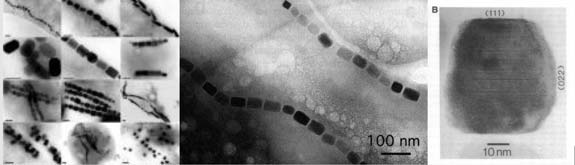

SECTION 4 : MAGNETS ON THE BRAIN
Researchers in various fields have still not found where human short term memory is stored. In this section I present evidence and concepts which illustrate that our brain is impregnated with the components for a ferroelectric fluid capable of holding memories in layers. Ferrofluid gives missing pieces, and unifies many current theories of brain function. Neurodynamics, Stochastic resonance, CEMI field, NAAMF’s (Neuronal activity associated magnetic fields)
WHERE IS CONSCIOUSNESS AND SHORT TERM MEMORY ?
The differing branches of debate, study and lab research tracking where consciousness lies has gradually emerged to the brain surface. Quantum gap junction theory (Hameroff,), and mainstream Neuron based neuroscience both at very different camps, have reached an impasse. Their results have lead them to the cortical brain surface where astrocytes couple together. Yet the low speed and lack of information density at the surface, still do not provide them with sought after answers. The brain surface is also where Banaclocha (125 ) and MacFadden (352), provide more direct connections to this “dipole neurology” project. Both of these predict memory is held in different aspects of the electromagnetic field at the brain surface. Banaclocha (397) has published several papers proposing that there is magnetic recording occurring at the cortex and was the first to publish the concept of this substance playing a role in cortical function.
Banaclocha states the problem
"human memory processes, like contextual recall, work at such high speed and integrate such a large number of cortical neurons and neuronal networks that molecular mechanisms of information storage and synaptic transmission seem insufficient. "
He then takes MacFadden's cortical surface work further by proposing
"any type of information can be stored in the form of ‘neuronal activity-associated magnetic fields' that would record information in much the same way as the magnetic tape of a tape recorder" (397)
These magnetic interactions would be reciprocal magnetic interaction between neurones and astrocytes. He points to the existence of astroglial magnetic fields and astroglial induction of neuronal firing. (398)
The electrical coupling between astrocytes play a role in the synchronization of ripples, high gamma oscillations (5751) which may "alarm" the brain about network large firing neurons. (424v) These would be similiar to hameroff "hyper neurons" however he admits that even these cannot account for cortical binding.(574a)
For this project there is also a problem. A dipole model requires some kind of mechanism to facilitate polarized coherence over a wider area of brain, than neuronal assembies. This section is going to provide evidence and concepts to propose that the missing links in the above and this research can be explained by quick reacting Cortical ferrofluids which arise in the Subarachnoid layer and have binding properties capable of ferroelectic memory which can hold quantum "style" superpositions. Astrocytes are filled with circulating cerebrospinal fluid(422b) and hemosiderin a mixture of lipid and ferritin particles (414), which form the basis of the magnetite / ferrihydrite particles required for a ferrofluid. Although the healthy brain surface is covered in these magnetic / lipid mixtures, So far they are researched as a disease by product.
LEFT : Binding properties of ferrofluids are immediately clear. RIGHT : Ferrofluids are capable of explaining cortical surface features such as gyri and collumns.
FERROFLUIDS AND SHORT TERM MEMORY
Satinovers “The Quantum brain” (351) investigates the academically revered Ising, Hopfield and von neumann models to reveal the ideal requirements for working memory in consciousness. Magnetic cellular automata which mixes different kinds of magnetic material into “spin glass” that can hold more than one memory. A material often a ferrofluid, is frustrated, because its larger structures, ferromagnetic and antiferromagnetic compounds, are at odds with the strict order its iron atoms require.
“An array of ferromagnets subject to a magnetic influence from the outside can store a memory-that’s exactly what happens when we use, say, Memorex audiotape to record a song. The tape is brown because the recording surface is made of iron. But this kind of tape can only store one memory at a time. In storing a new memory you erase the old one. A spin glass (mixing ferromagnetic and antiferromagnetic domains) however, can store many new memories at once, just like a neural network and the brain, and it does so spontaneaously, without being given any instructions. It is able to do this because a spin glass array of magnets and antimagnets has more than one “best” arrangement. Each such best arrangement can get connected to a different memory and store it”(351)
(1) spin glass antiferromagnet, the structure causes a continual tug of movement within the molecule (2) Ferrihidyrite itself. (3) The flipping within ferrihydrite creates its own hysteresis remamence (memory) (4) the other required spin glass component, a magnetite ferrofluid.
The ideal components for these multiple memories are a spin glass compromised of ferromagnetic / antiferromagnetic compounds. These two required elements for the spin glass combination are exactly what had been found by researchers looking at the iron compounds coating the cortex in alzheimers disease, (413, 414, 415) and at the centre of plaques and tangles.(395)
“a two-component system, consisting of horse spleen ferritin (HoSF) which contains a 5–8 nm sized antiferromagnetic ferrihydrite (5Fe2O3·9H2O) core and ferrimagnetic magnetite (Fe3O4) nanoparticles (MNP) with an average size of 10–20 nm”(395)
SUPERPOSITIONAL FERROFLUIDS AT BODY TEMPERATURE
At room temperature, this combination of magnetic compounds bathed in CSF lipids have the properties of a spin glass ferrofluid with ferroelectric liquid crystal properties, (423) Ferroelectrics are superior to ferromagnetics for memory cells in computing (424) And ferroelectric behavior in microtubules is sought after for quantum information processing (422c)
“ferroelectric order is possible but its existence is very sensitive to the dipole vector dimensionality and the motion of the medium…The fluid systems differ from the frozen case in that the strongly coupled translational and rotational degrees of freedom are in full thermal equilibrium. This allows the development of short range spatial correlations resembling those seen in the ferroelectric tetragonal-I lattice and, consequently, ferroelectric order develops in the liquid phase (423)
While under an applied electric field, ferrofluids become solidified in 3ms and relax on field removal in up to 6.5ms (419d) They are capable of retaining Multiple memories for associative memory (419c) ideal for superposition.
“We analyse an associative memory based on a ferrofluid, consisting of a system of magnetic nano-particles suspended in a carrier fluid of variable viscosity subject to patterns of magnetic fields from an array of input and output magnetic pads ….. Using Monte Carlo simulations of the physical system we demonstrate that the device is capable of storing and recalling two sets of images, each with an accuracy approaching 100%.” (419c) (recall occurred while fluid was frozen)
Ferrofluids, are a highly active area, being researched for quantum computation when frozen (420,421,422). The requirements of computer engineers, and what the brain needs are different things. There is already some amount of coherence within CSF fluids (655), but at this stage its not possible to say they provide any more coherence than magnetic particle level coupling.
Even without the small scale factor this still leaves a couple of possibilities for ferrofluids.
1. They provide some kind of conductive coherence across the brain surface to aid microscopic binding.
2. They record cortical information in one or more layer with enough coherence to grease conscious perception with larger scale binding and magnetic particle resolution superposition.
FERROFLUID LATENCY CORRELATES WITH LIMITS OF PROCESSING
Mri researchers have found atomic spin coherence in ventricular matter of 300ms, (655) which is similar to the P300 decoherence time after sensory input. Such coherence times within the CSF would be consistent with the coherence of the proposed cortical ferrofluid. Other times correlate also
The Geissler-Stroud-theory based on physiological measurements, derived the temporal architecture of mental processes with a universal constant of approximately 4.5 ms. (426) While under an applied electric field, ferrofluids become solidified in 3ms (419d). Several milliseconds preceding phase interactions between neuronal groups (which have a high gamma limit of 4ms) are “unknown” mechanisms that modulate the effective strength of a given connection (354) We can tap a steady beat as low as 4ms adjust our tapping to compensate for variations of around 4ms and detect consciously timing variations of around 6ms, (355) which is the relaxation time of a ferrofluid (419d)
The Ferrofluids properties make it a liquid capable of maintaining super positioned ferroelectric information at physiological temperature, and so are the proposed memory properties of microtubles. The two could be compatible. Also as mentioned above the forces which govern the synaptic strength of which microtubule structures are involved is still unknown but correlate in both time (3ms) and location at the cortical surface.
As proposed by Tuszynski microtubules are ideal for modulating long term memories. (657) Gamma synchrony would couple both the ferrofluid and the microtubules This gives two ferroelectric systems locked together to facilitate superpositioned states covering a wider time span than action potentials. Ferrofluid (short term, 3ms latency) and microtubule (long term, high latency).
FERROFLUIDS AND BRAIN APPEARANCE
Considering the above discussion on ferrofluids sandwiched to the brain surface its no surprise when looking at images of stripe domains ( (which are photographs of thin ferromagnetic strips, written to by an alternating magnetic field) Writers have commented on the similarity to cortical folds. (118, 120) The production of Magnetic stripe domains (124) produces similar visual appearance to the perpendicular anisotropic (upwards direction) domain ordering, seen at both the surface of the brain and the cortical columns themselves. (1 and 2 in diagram above) . Even closer to our ferrofluid model, from the Caltech labs, sandwiching a ferrofluid between two plates (like the subarachnoid space ?) and applying an alternating current produces the same result. (3 in diagram above).
As for the “magnetic” shift, found in large veins at the cortical surface (268,269) its no surprise, that in comparison to the arteries, there is an increasingly fractalised structure which is precisely aligned to the cortical domains themselves, ( 4 in figure above) and why the central sinus into which these veins converge at midline is toroidal, a midline shape repeatedly found in dipole systems.( Is this tightness of veins to surface, the result of interaction between Deoxygenated blood and ferrofluid ?) The fact that cortical folds scale with size through all mammalian species suggest that they are related to a physical property that is consistent such as that of magnetic compounds.
NOTE: The following parts here provide a summary of analysis of iron compounds in the brain, from the book section : "Magnets in the brain"
INTRODUCTION TO MAGNETIC SUBSTANCES IN BIOLOGY
Throughout this project I have taken great interest in a series of iron compounds found to be coating the cortex. Discovered in 1992 through alzhiemer’s research (and in abundance in normal brains also) they are thought to be a waste by product which accumulates, eventually leading to neurodegeneration. Magnetite and ferrihydrite are superparamagnetic iron compounds found throughout the brain, but mostly at the brain surface, and also regions associated with memory, such as hippocampus and cerebellum. The rest of this section is a summary of detailed analysis of iron compounds in the brain.
“Magnetite… a ferrimagnetic mineral with chemical formula Fe3O4….is the most magnetic of all the minerals on Earth…….Crystals of magnetite have been found in some bacteria and in the brains of bees, of some birds (e.g., the pigeon), and of humans.” (143)

Various forms of magnetite within nature. : LEFT : All these examples were found within bacteria. MIDDLE : the crystals form chains. RIGHT : Crystal from human hippocampus. So far, 3 billion magnetite particles have been found in the human brain. (53)
As Magnetite, bound together in CSF lipids has the potential to be the missing link for many areas of brain research, the first question is how much of it do we have.
CORTICAL DISTRIBUTION OF MAGNETITE
Magnetite is distributed in density throughout the entire outer brain layer, in clumps of about 80 bio-mineralized crystals. (24)
“Grain sizes were bimodal, with 62 of the 70 measured crystals in the 10 to 70nm range, and the remaining 8 with sizes ranging from 90 to 200 nm. Measurements in the TEM (electron microscope) shadows from 62 of the smaller particles in one aggregate, yielded an average size of 33 +- 15.2nm. Note that this mean value must be biased towards the larger sized, because the extraction procedure will discriminate against very small particles that move through the liquid. Size and shape relationships for all measured particles fall within the single-domain and super paramagnetic fields for magnetite. Crystal volume estimates, done by assuming equant particle shapes, imply that the larger particles compose a maximum of around 85% of the magnetite. Using this distribution we estimate that brain tissue contain a minimum of around 5,000,000 crystals per gram, distributed in the 50,000-100,000 discrete clusters. Similarly, the meninges contain a minimum of 100 million crystals per gram in 1-2,000,000 clusters.” (24)
From this, there are an average of 75 crystals per cluster. 62 of the 70 in the electron microscope sample had average size of 33nm +/- 15.2nm This value is said to be baised towards the larger size, indicating that the majority may be around 25nm. A good size for a ferrofluid. This does not agree with the later statement that larger particles compose 85% of the magnetite. The larger particles represented 12% of the cluster with sizes from 90 to 200nm . Even with 12% at a large value of 150nm and 88% of the smaller particles at 25nm, the larger particles would represent only 50%. If the extraction procedure discriminates against smaller particles, presumably the mean bias for the smaller size group has to apply even more so to the larger group and the mean for the large group should be adjusted towards an average size of 100nm.
PROPOSAL FOR A LIPID/MAGNETITE FERROFLUID
This section examines the distribution figures to find if this is the correct magnitude to play a part in orientating the basic cell units of cortical columns. (35 Microns) (14, 255). Using the figures for overall distribution, leptomeninges have a mean weight of 34.2 g, (172) This makes for approx 3,420,000,000 cortical magnetite crystals divided by clusters of 75 gives 45,600,000 cortical clusters. This number would require more analysis of distribution of magnetite within particular areas of the meninges. Also magnetite would be in the removed pia layers which would contribute to the cortical surface total. The number of approx 40,000,000 cortical magnetite clusters lies between current estimates for the number of cortical minicolumns and hypercolumns 200,000,000 and 200,000 respectively. (255) So to fill out the greater numbers of particles required for a useful cortical ferrofluid, a proposition will be made for a ferrofluid mix consisting of both magnetite and ferrihydrite crystals (which arises within lipid bound deposits of ferrihydrite called hemosiderin) as well as larger and smaller magnetite crystals within siderosomes. Because the cortical column is the smallest structural unit of cohesive neural function there has to be a suitable brain lipid to space the limited number of particles out to play a role in neuronal function.
RIGHT : Graphic defining the Macro or Hypercolumn visually. (255) The hypercolumn represents everything contained within the whole unit. Macrocollumn diameter is estimated at 200-700 µm, (60-80 minicollumns) Minicollumn diameter 40-50 µm. (100 neurons per minicollumn) (66) MIDDLE : Ferrofluids tend to space themselves out, moving with Phyllotaxis spin if dissolved in another liquid and in the presence of a magnetic field (387) RIGHT : Visual representation for a cortical ferrofluid. The magnetic material larger than 30nm aggregates together in the centre, which if undergoing spin force, could space the remaining smaller iron compounds which are present in CSF solution out to fill the diameter of the minicollumms 40-50 µm.
CSF FREE LIPIDS
There are many lipids in the CSF. Some of these are transported by Albumin, a protein that is produced in the choroids plexus. Albumin represents 3.5mg of CSF and (214) transports fatty acids ("free" fatty acids). (222)
“Human cerebrospinal fluid is an ultrafiltrate of plasma that is largely produced by the choroid plexus. It consists of a mixture of anorganic salts, various sugars, lipids and proteins from the surrounding brain tissues. The predominant proteins in cerebrospinal fluid are isoforms of serum albumin, transferrin and immunoglobulins, representing more than 70% of the total protein amount”.
Magnetite lipids have already been developed for medical use such as drug delivery, long before they were discovered in the brain. Medical engineers created "magnetite cationic liposomes" (MCLs), which are cationic liposomes containing 10-nm magnetite nanoparticles. In these engineering experiments albumin secretion by liver cells increased in response to the presence of the magnetite.
“Albumin secretion by hepatocytes (liver cells) was about three times higher than that of the control co-culture system without magnetic force.” (210)
In the brain albumin is produced by the choroid plexus. Would this increase in response to the brains own electromagnetic forces ? Albumin itself has been used by medical engineers as a sealant for magnetite, When it was discovered that this protein solution dispersed in oil, and then heated produced solid, spheroid albumin protein particles. The substance called polyacrolein contains magnetite cores less than 25nm. These were produced for drug delivery. (220, 221)
MEDICAL IMPLICATIONS
If these magnetic compounds play a large role in mammalian short term memory, there could be implications for alzheimers as the first symptom is loss of short term memory. Magnetic materials also undergo magnetic ageing, (417, 415) losing their ability to retain information which may have knock on effects within the brain itself.
Section 4 summary
PROBLEM
Memory speed, (397) span and binding (574a) are not explainable by known molecular mechanisms.
Several different researchers are looking at Astrocyte Gap junctions “hyperneurons” (424v))for recording (397) and binding mechanisms. (125 ) (352), (5751) Astroglial magnetic fields induce neuronal firing. (398)
PROPOSAL
Ferrofluids record cortical information in one or more layers with enough coherence to grease conscious perception with larger scale binding and magnetic particle resolution superposition. If magnetite is involved in short term memory then magnetic ageing may explain age related memory loss.
POINTS
Astrocytes filled with CSF (422b) and hemosiderin, (414) the lipid and magnetite formation elements for ferrofluid.
Magnetic particles found at cortex surface (magnetite and ferrihydrite) (24, 53, 143, 395, 413, 414, 415) are ideal for spin glass ferrofluid (351) 3,420,000,000 magnetite particles at cortical surface, (CHECK) (14,172, 255)
Ferrofluid properties at physiological temperature : Ferroelectric, (423) spin glass, (351) associative memory, (419c) 3ms latency (419d) Quantum computation while frozen.. (420,421,422). Ferrofluid has similar information properties to microtubules. (657).
Ferrofluid latency 3ms correlates to mental processing limits. (426) (355) Unknown mechanisms for gap junction coherence. (426) and high gamma 4ms.
CSF has quantum coherence times of P300 (655)
CSF has abundance of free lipids suitable for ferrofluids, linoleic, myristic and palmitic. (105-638 microG/L) (199)
Choroid plexus secrete albumin to transport CSF lipids (222) albumin is used in engineering to coat magnetite particles (220, 221) Albumin secretion by liver cells increases in response to the presence of the magnetite. (210)
Cortex surface fold patterns and cortical columns have structural features found in active ferrofluids (124)
INTEGRATED
Banaclocha NAAMF (397,398)
MacFadden CEMI (352)
Tuszynski (Microtubule LTP) (657).
Hameroff Quantum style Binding (574
REFERENCES
14 Kobayashi AK, Kirschvink JL, Nesson MH. Ferromagnetism and EMFs. Nature1995;374(6518):123.
52 Dunn JR, Fuller M, Zoeger J et al. Magnetic Material in the Human Hippocampus. Brain Res. Bull 1995;36(2):149-153.
53 Dobson J, Grassi P. Magnetic Properties of Human Hippocampal Tissue: Evaluation of Artefact and Contamination Sources. Brain Bull 1996;39: 255-259
66 Hutsler J, Galuske RA. Hemispheric asymmetries in cerebral cortical networks. Trends Neurosci. 2003;26(8):429-35.
118 Ogawa T. Topological Disorder in Condensed Matter 1983:60-77.
120 Stevens PS. Patterns in Nature. 1974.
124 NOT NEEDED
125 Banaclocha MA. Are neuronal activity-associated magnetic fields the physical base for memory? Med Hypotheses. 2002;59(5):555-9.
143 Quintana C, Cowley JM, Marhic C. Electron nanodiffraction and high-resolution electron microscopy studies of the structure and composition of physiological and pathological ferritin. J Struct Biol 2004;147(2):166-78.
172 Lindboe CF. Brain weight: what does it mean? Clin Neuropathol 2003;22(6):263-5.
199 Prasad MR, Lovell MA, Yatin M, Dhillon H, Markesbery WR. Regional membrane phospholipid alterations in Alzheimer's disease. Neurochem Res 1998;23(1):81-8.
210 Matsuoka F, Shinkai M, Honda H, Kubo T, Sugita T, Kobayashi T. Hyperthermia using magnetite cationic liposomes for hamster osteosarcoma. Biomagn Res Technol 2004;2(1):3.
214 Daniele F. PHYSIOLOGY OF ADULT HOMO SAPIENS - NERVOUS SYSTEM cerebrospinal fluid (CSF) and ventricular system. http://focosi.altervista.org/nervoussystem.html#Bibliography 2001. 30/11/2008.
220 Widder DJ, Greif WL, Widder KJ, Edelman RR, Brady TJ. Magnetite albumin microspheres: a new MR contrast material. AJR Am J Roentgenol. 1987;148(2):399-404.
221 Widder DJ, Edelman RR, Grief WL, Monda L. Magnetite albumin suspension: a superparamagnetic oral MR contrast agent. AJR Am J Roentgenol. 1987;149(4):839-43.
222 Albumin From Wikipedia, the free encyclopedia. http://en.wikipedia.org/wiki/Albumin 2006. 30/11/2008.
255 Johansson C, Lansner A. Towards Cortex Sized Artificial Nervous Systems. Neural Netw 2007;20(1):48-61.
268 Kim SG, Duong TQ, Kim DS, Nagaoka T, Harel N. Spatial specificity of CBF and BOLD responses induced by neural activity. International Congress Series 2002;1235:39-47.
269 Logothetis N. Can current fMRI techniques reveal the micro-architecture of cortex? Nat Neurosci. 2000;3(5):413-4.
351 Satinover J. The Quantum Brain: The Search for Freedom and the Next Generation of Man. 2001.
352 McFadden J. The Conscious Electromagnetic Information (Cemi) Field Theory: The Hard Problem Made Easy? Journal of Consciousness Studies 2002;9(8):45-60.
354 Womelsdorf T, Schoffelen JM, Oostenveld R. Modulation of neuronal interactions through neuronal synchronization. Science 2007;316(5831):1609-12.
355 Lago NP, Kon F. The quest for low latency. http://www.ime.usp.br/~kon/papers/icmc04-latency.pdf 2004. 30/11/2008.
387 Douady S, Couder Y. Phyllotaxis as a Dynamical Self Organizing Process
Part I] The Spiral Modes Resulting from Time!Periodic Iterations. http://www.math.ntnu.no/~jarlet/Douady96.pdf 1996. 30/11/2008.
395 Brem F, Tiefenauer L, Fink A, Dobson J, Hirt AM. A mixture of ferritin and magnetite nanoparticles mimics the magnetic properties of human brain tissue. Physical review B 2006;B73:224-427.
397 Banaclocha MA. Are neuronal activity-associated magnetic fields the physical base for memory? Med Hypotheses 2002;59(5):555-9.
398 Banaclocha MA. Neuromagnetic dialogue between neuronal minicolumns and astroglial network: a new approach for memory and cerebral computation. Brain Res Bull 2007;73(1-3):21-7.
402 Polich J. Updating P300: an integrative theory of P3a and P3b. Clin Neurophysiol 2007;118(10):2128-48.
403 Linden DE. The p300: where in the brain is it produced and what does it tell us? Neuroscientist 2005;11(6):563-76.
408a2 Vianin P, Posada A, Hugues E et al. Reduced P300 amplitude in a visual recognition task in patients with schizophrenia. Neuroimage 2002;17(2):911-21.
411c Klimesch W, Schack B, Schabus M et al. Phase-locked alpha and theta oscillations generate the P1–N1 complex and are related to memory performance. Brain Res Cogn Brain Res. 2004;19(3):302-16.
413 Dobson J. On the structural form of iron in ferritin cores associated with progressive supranuclear palsy and Alzheimer's disease. Cell Mol Biol (Noisy-le-grand) 2001;47
414 Quintana C, Bellefqih S, Laval JY et al. Study of the localization of iron, ferritin, and hemosiderin in Alzheimer's disease hippocampus by analytical microscopy at the subcellular level. J Struct Biol 2006;153(1):42-54.
415 Quintana C, Cowley JM, Marhic C. Electron nanodiffraction and high-resolution electron microscopy studies of the structure and composition of physiological and pathological ferritin. J Struct Biol 2004;147(2):166-78.
417 Stroganova TA, Nygren G, Tsetlin MM et al. Abnormal EEG lateralization in boys with autism. Clin Neurophysiol 2007;118(8):1842-54.
419c Palm R, Korenivski V. A ferrofluid based neural network: design of an analogue associative memory. http://arxiv.org/abs/0705.3402 2007. 30/11/2008.
419d Park JH, Chin BD, Park OO. Rheological Properties and Stabilization of Magnetorheological Fluids in a Water-in-Oil Emulsion. J Colloid Interface Sci 2001;240(1):349-354.
420 Lahaye T, Koch T, Fröhlich B et al. Strong dipolar effects in a quantum ferrofluid. Nature. 2007;448(7154):672-5.
421 Balcells L, Tholence JL, Linderoth S, BarbaraB, Tejada J. Quantum tunneling of magnetization in metallic FeC ferrofluids. Zeitschrift für Physik B Condensed Matter 1992;89(2):209-212.
422 Levy J. Oxide-Semiconductor Materials for Quantum Computation. physica status solidi (b) 2002;233(3):467-471.
422b Guyton, Hall. Guytan’s Textbook of Physiology. 2000.
422c Tuszynski, S Hameroff, MV Sataric, B Trpisova. Ferroelectric behavior in microtubule dipole lattices: Implications for information processing, signaling and assembly/disassembly. MLA Nip Journal of Theoretical Biology 1994;174:371-381.
423 Ayton G, Gingras MJ, Patey GN. Orientational ordering in spatially disordered dipolar systems. Phys Rev Lett 1995;75(12):2360-2363.
424 NOT NEEDED
424v Bazhenov M, Timofeev I. Thalamocortical oscillations. http://www.scholarpedia.org/article/Thalamocortical_oscillations 2006. 30/11/2008.
426 Weiss V. The relationship between short-term memory capacity and EEG power spectral density. Biol Cybern 1992;68(2):165-72.
426b VanRullen R, Koch C. Is perception discrete or continuous? Trends Cogn Sci 2003;7(5):207-213.
426d Prechtl JC, Cohen LB, Pesaran B, Mitra PP, Kleinfeld D. Visual stimuli induce waves of electrical activity in turtle cortex. Proc Natl Acad Sci U S A 1997;94(14):7621-6.
574a Hameroff SR. The Brain Is Both Neurocomputer and Quantum Computer. Cognitive Science: A Multidisciplinary Journal 2007;31(6):1035-1045.
5751 Edwards E, Soltani M, Deouell LY, Berger MS, Knight RT. High gamma activity in response to deviant auditory stimuli recorded directly from human cortex. J Neurophysiol 2005;94(6):4269-80.
576c Klimesch W. Memory processes, brain oscillations and EEG synchronization. Int J Psychophysiol 1996;24(1-2):61-100.
655 Rizi RR, Ahn S, Alsop DC. Intermolecular zero-quantum coherence imaging of the human brain. Magn Reson Med 2000;43(5):627-32.
657 Priel A, Tuszynski JA, Woolf NJ. Transitions in microtubule C-termini conformations as a possible dendritic signaling phenomenon. Eur Biophys J 2005;35(1):40-52.
|